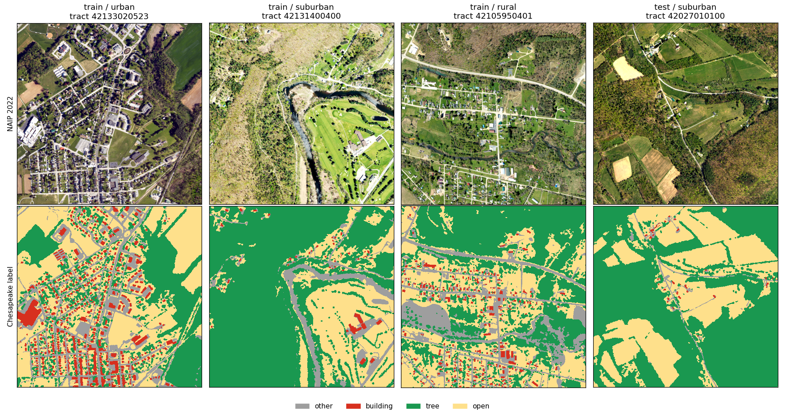
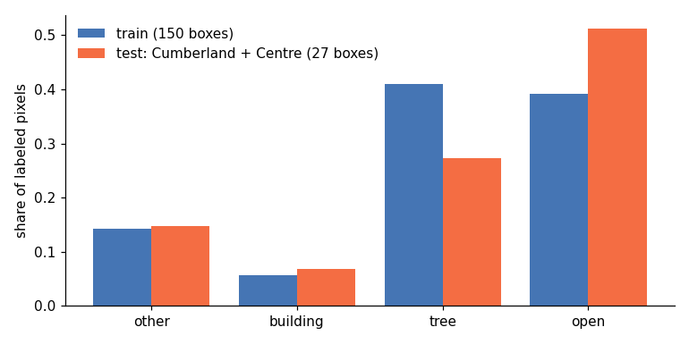
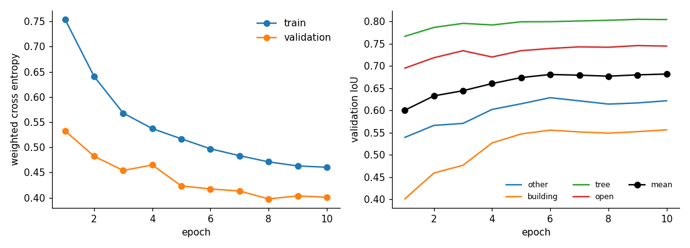
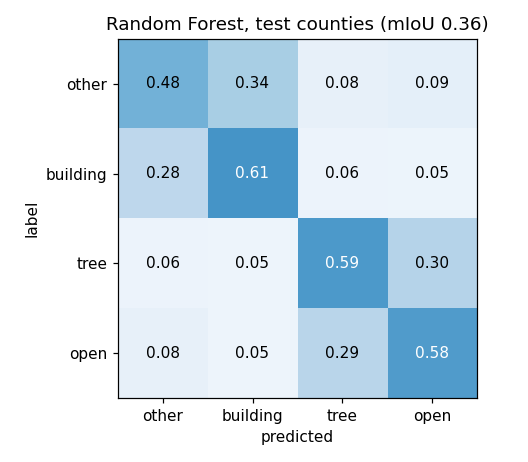
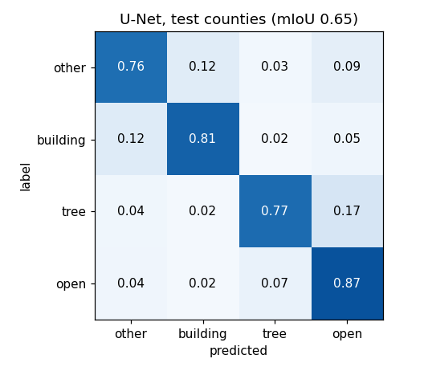
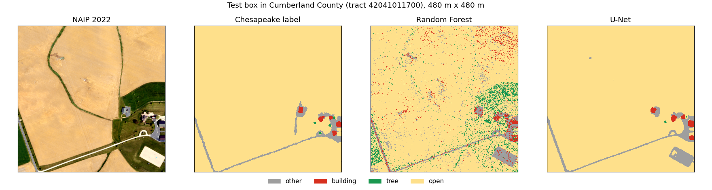
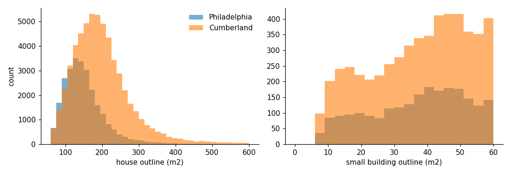
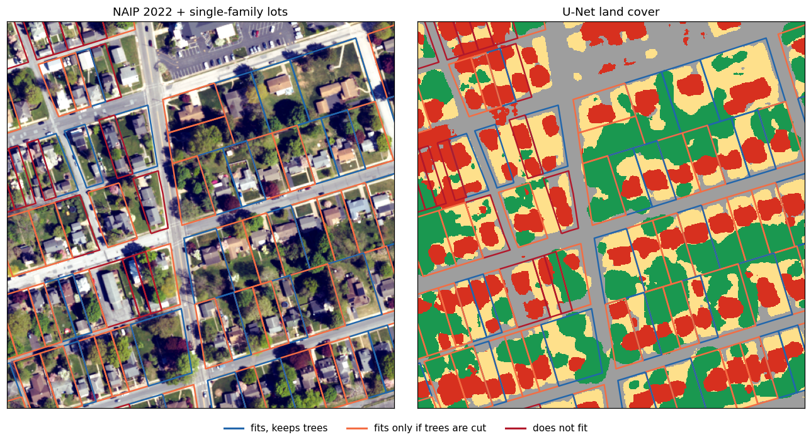
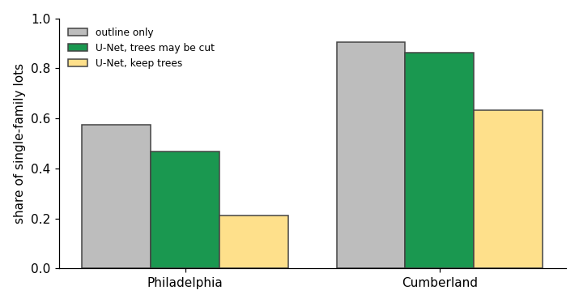
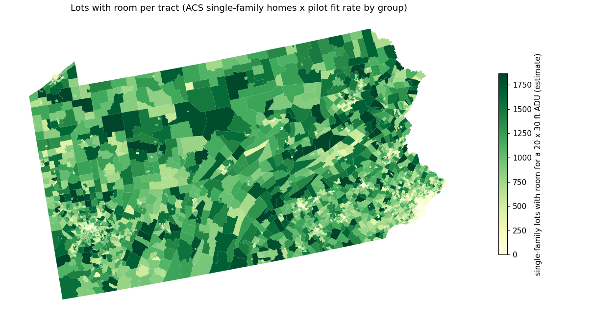

MUSA 6950 Results
All numbers below come from the executed notebooks in musa6950/notebooks/. Hand labels are not made yet, so the fit rule has no hand-label check so far.
Data check

- 177 boxes were picked. 4 on the New York line have no 2022 PA image. 173 are used: 146 train, 27 test
- Labels sit on the image grid (same transform and size)
- The test counties have less tree and more open ground than train
| Share of labeled pixels | other | building | tree | open |
|---|---|---|---|---|
| Train (146 boxes) | 0.143 | 0.056 | 0.410 | 0.391 |
| Test, Cumberland + Centre (27 boxes) | 0.147 | 0.068 | 0.273 | 0.512 |

Model accuracy
Test = every labeled pixel in the 27 test boxes (109,183,195 pixels). Both models are scored on the same pixels.
| IoU on test counties | Random Forest | U-Net | Gain |
|---|---|---|---|
| other | 0.321 | 0.601 | +0.280 |
| building | 0.267 | 0.543 | +0.277 |
| tree | 0.368 | 0.672 | +0.304 |
| open ground | 0.485 | 0.775 | +0.290 |
| mean IoU | 0.360 | 0.648 | +0.288 |
| pixel accuracy | 0.571 | 0.824 | +0.252 |
| Mean IoU by group (test) | Random Forest | U-Net |
|---|---|---|
| urban | 0.322 | 0.588 |
| suburban | 0.358 | 0.681 |
| rural | 0.388 | 0.672 |
- Random Forest: 290,219 training pixels (500 per class per box), R, G, B, NIR, NDVI. NDVI is the top feature (0.275)
- U-Net: 5,976 train tiles, 1,176 validation tiles (7 held-back counties). 10 epochs, 45 min on a Mac (MPS)
- Best validation mIoU 0.682 at epoch 10. Validation was still creeping up, so more epochs may help a little
- U-Net almost doubles the Random Forest on every class
- Weakest: buildings (0.543). Urban boxes score lowest (0.588)
- Main U-Net mix-up: 17% of tree pixels are called open ground. 12% of building pixels are called other (roofs vs paving)
- In Assignment 6 bare soil got 0 IoU. Here it is inside “open ground”, which scores best




- The Random Forest is speckled pixel by pixel. The U-Net gives clean shapes but rounds off building corners
Garages and sheds
- Outline method only. YOLO is not done (no shed labels yet)
- Single-family lots picked in notebook 04:
- Philadelphia: 26,270 lots (detached house type, one main outline)
- Cumberland: 57,664 lots (300-20,000 m2, one main outline)
| Philadelphia | Cumberland | |
|---|---|---|
| Median lot (m2) | 637 | 1,425 |
| Median house outline (m2) | 141 | 187 |
| Lots with a small outline (under 60 m2) | 8.2% | 8.8% |
| Small outlines found | 2,214 | 5,320 |

- Under 9% of lots have a garage or shed outline. That looks low. Microsoft outlines likely miss many small sheds, which is what YOLO was meant to test
- Missed sheds make the fit rule a bit too generous
Room for an ADU
Rule: lot minus 5 ft from lot lines, minus 10 ft around the house, minus other outlines. Then a 20 x 30 ft spot (10 x 15 pixels), both rotations.

| Pilot county | Lots | Fits (trees may be cut) | Fits keeping trees | Outline only |
|---|---|---|---|---|
| Philadelphia | 26,270 | 46.8% | 21.1% | 57.4% |
| Cumberland | 57,664 | 86.2% | 63.2% | 90.6% |

- Median backyard left after setbacks: 223 m2 in Philadelphia, 797 m2 in Cumberland
- Outline-only says yes and U-Net says no on 2,792 Philadelphia lots and 2,562 Cumberland lots. These are yards covered by driveways, patios, or pools. The U-Net never says yes when outline-only says no
- Trees matter most in Philadelphia: keeping trees cuts the fit rate by more than half
Check against real labels (not hand labels). 3,030 Cumberland lots sit inside test boxes, where the Chesapeake label exists. The rule is run with the label map and with the U-Net map:
| Label map = truth | Share yes (label) | Share yes (model) | Precision | Recall | Agreement |
|---|---|---|---|---|---|
| fits, U-Net | 0.646 | 0.621 | 0.980 | 0.942 | 0.950 |
| fits keeping trees, U-Net | 0.419 | 0.409 | 0.835 | 0.816 | 0.855 |
| fits, outline only | 0.646 | 0.728 | 0.888 | 1.000 | 0.918 |
- The U-Net map gives the same answer as the label map on 95% of lots. Keeping trees is harder (86%)
- Outline only over-counts: it says yes on 72.8% of lots vs 64.6% with the label map
- Open ground per lot: label vs U-Net median 287 vs 258 m2, correlation 0.959
- Tree area per lot: median 159 vs 106 m2, correlation 0.935. The U-Net under-calls trees, so
fits_keep_treesis likely a bit high - This check is only Cumberland and only tests the land cover step. Hand labels would also test the rule itself
Statewide
Fit rate by group from the pilot lots. Range = 95% bootstrap, resampling tracts 1,000 times.
| Group | Pilot lots | Pilot tracts | Fit rate (range) | Keep trees rate (range) | Tree cut per fitting lot (m2) |
|---|---|---|---|---|---|
| Urban (RUCA 1) | 70,581 | 342 | 0.704 (0.655-0.751) | 0.437 (0.377-0.497) | 11.8 |
| Suburban (RUCA 2-3) | 9,826 | 11 | 0.964 (0.929-0.989) | 0.882 (0.817-0.944) | 2.2 |
| Rural (RUCA 4-10) | 3,527 | 4 | 0.792 (0.503-0.925) | 0.696 (0.335-0.857) | 3.1 |
- Urban = 26,270 Philadelphia lots + 44,311 Cumberland urban lots. Philadelphia alone is 0.468, Cumberland urban is 0.845
- Suburban and rural come only from Cumberland, from 11 and 4 tracts. The rural range is wide for that reason
Applied to ACS 2020-24 single-family detached homes in all 3,445 PA tracts:
| Single-family homes | Lots with room | Range | Lots with room, keep trees | Tree canopy cut (m2) | |
|---|---|---|---|---|---|
| Urban | 1,858,258 | 1,308,828 | 1,216,647-1,395,083 | 812,383 | 15,378,230 |
| Suburban | 646,067 | 622,526 | 600,262-639,144 | 569,600 | 1,370,858 |
| Rural | 783,142 | 620,163 | 393,993-724,269 | 545,115 | 1,901,980 |
| Pennsylvania | 3,287,467 | 2,551,517 | 2,210,902-2,758,496 | 1,927,098 | 18,651,068 |
- About 2.55 million single-family lots have room for a 20 x 30 ft ADU by this rule. About 1.93 million without cutting trees
- If every fitting lot built one, about 18.65 km2 (4,609 acres) of tree canopy would be cut
- Most of the tree loss is in urban tracts, where yards are small and the spot often needs trees cut
- This is room, not demand. Zoning, slope, septic, and owner choice are not in the rule

Limits
- No hand labels yet. The blank form is
data/processed/hand_labels_template.csv(250 lots) - Labels only cover the Chesapeake part of PA (central and east). Western PA has no labels. The model is applied there only through the statewide rates, never checked
- The rates come from two counties. All rural PA rests on 4 Cumberland tracts. Western PA towns and Pittsburgh are not in the sample
- Philadelphia rowhouses and twins are left out (Microsoft merges a row into one outline). ACS counts some twins as detached, so Philadelphia tracts may have more homes in
lots_totalthan the lots tested - “Backyard” includes the front yard. Many towns do not allow an ADU in front of the house
- Missed sheds and under-called trees both make the rule a bit generous
- Images and labels are from 2022
- Lot rules (setbacks, minimum lot size) vary by town. One rule is used for all